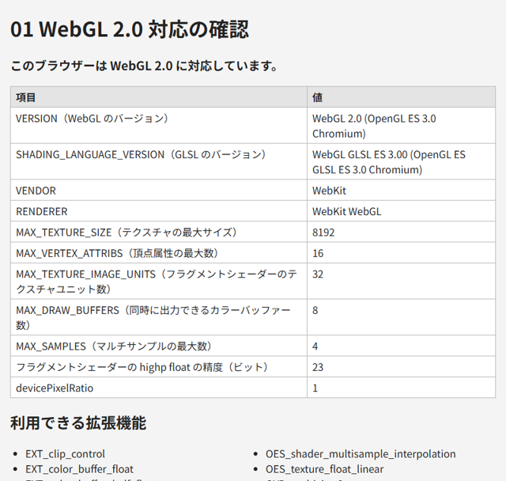

2. 開発環境の準備
この章では、WebGL のプログラムを作成・実行するための環境を整えます。
2.1. 必要なもの
WebGL のプログラムは HTML ファイルと JavaScript だけで作成できるので、特別なビルドツールは必要ありません。必要なものを表 2.1 に示します。
種類 |
内容 |
|---|---|
ブラウザー |
WebGL 2.0 に対応したブラウザー。Chrome または Edge を推奨します。開発者ツールが充実しており、本書のサンプルの動作も確認しています。 |
テキストエディター |
HTML と JavaScript を編集できるもの。Visual Studio Code などが便利です。GLSL の構文を色分けする拡張機能もあります。 |
Python 3 |
ローカルサーバー（後述）と、本書の補助スクリプトの実行に使います。Python 3.10 以降を想定しています。 |
Pillow |
テクスチャ画像を生成するスクリプト |
2.2. WebGL 2.0 への対応を確認する
まず、使用するブラウザーが WebGL 2.0 に対応しているかを確認します。WebGL 2.0 のコンテキストは canvas.getContext("webgl2") で取得します。ブラウザーが WebGL 2.0 に対応していない場合や、GPU のドライバーの問題で無効になっている場合は null が返ります。
1const canvas = document.getElementById("canvas");
2const gl = canvas.getContext("webgl2");
3if (!gl) {
4 // WebGL 2.0 が使えない場合の処理
5 console.log("このブラウザーは WebGL 2.0 に対応していません。");
6}
サンプル 01_check_support.html は、WebGL 2.0 に対応しているかどうかに加えて、gl.getParameter で取得した実装の情報や上限値と、利用できる拡張機能の一覧を表示します。

図 2.1 01_check_support.html の実行結果
表示される上限値（テクスチャの最大サイズなど）は、GPU やブラウザーによって異なります。多くの環境で動作するプログラムを作るには、この上限値を超えないようにする必要があります。
注釈
RENDERER に表示される GPU の名前は、プライバシー保護のため、ブラウザーによっては一般的な名前に置き換えられます。
2.3. ローカルサーバーを起動する
HTML ファイルをダブルクリックすると、ブラウザーは file:// で始まる URL でファイルを開きます。ほとんどのサンプルはこの方法で動作しますが、画像ファイルをテクスチャとして使うサンプルは動作しません。ブラウザーのセキュリティー機能により、file:// で開いたページでは画像の出どころ（オリジン）が異なるものとして扱われ、WebGL へ画像を転送できないためです（詳しくは第 9 章で説明します）。
そこで、手元の PC で HTTP サーバーを起動し、http://localhost:8000/ のような URL でページを開きます。本書では、Python の標準ライブラリだけで動作する serve.py を用意しています。
1> cd examples
2> python serve.py
3配信フォルダー: C:\...\examples
4http://localhost:8000/ を開いてください。終了するには Ctrl+C を押します。
ブラウザーで http://localhost:8000/ を開くと、サンプルの一覧が表示されます。主なオプションを表 2.2 に示します。
オプション |
内容 |
|---|---|
|
待ち受けるポート番号（既定値は 8000） |
|
配信するフォルダー（既定値は |
|
待ち受けるアドレス（既定値は |
|
起動後に既定のブラウザーでページを開きます |
serve.py の内容は次のとおりです。標準ライブラリの http.server を使い、指定したフォルダーを配信します。
1"""WebGL のサンプルを閲覧するためのローカル HTTP サーバー。
2
3テクスチャ画像を読み込むサンプルは、HTML ファイルを直接開く (file://) と
4ブラウザーのセキュリティー制限により動作しない。このスクリプトで
5HTTP サーバーを起動し、http://localhost:8000/ から開くこと。
6
7使い方:
8 python serve.py # このスクリプトのフォルダーを配信
9 python serve.py --port 8080 # ポート番号を変更
10 python serve.py --directory ../build/html --open
11
12終了するには Ctrl+C を押す。
13"""
14
15from __future__ import annotations
16
17import argparse
18import functools
19import http.server
20import sys
21import webbrowser
22from pathlib import Path
23
24
25def parse_args(argv: list[str]) -> argparse.Namespace:
26 parser = argparse.ArgumentParser(
27 description="指定したフォルダーを HTTP で配信します。"
28 )
29 parser.add_argument(
30 "--port", type=int, default=8000, help="ポート番号（既定: 8000）"
31 )
32 parser.add_argument(
33 "--bind",
34 default="127.0.0.1",
35 help="待ち受けるアドレス（既定: 127.0.0.1。自分の PC からのみ接続可能）",
36 )
37 parser.add_argument(
38 "--directory",
39 type=Path,
40 default=Path(__file__).resolve().parent,
41 help="配信するフォルダー（既定: このスクリプトのフォルダー）",
42 )
43 parser.add_argument(
44 "--open", action="store_true", help="起動後に既定のブラウザーで開く"
45 )
46 return parser.parse_args(argv)
47
48
49def main(argv: list[str]) -> int:
50 args = parse_args(argv)
51 directory: Path = args.directory.resolve()
52 if not directory.is_dir():
53 print(f"フォルダーが見つかりません: {directory}", file=sys.stderr)
54 return 1
55
56 handler = functools.partial(
57 http.server.SimpleHTTPRequestHandler, directory=str(directory)
58 )
59 try:
60 server = http.server.ThreadingHTTPServer(
61 (args.bind, args.port), handler
62 )
63 except OSError as error:
64 print(f"サーバーを起動できません: {error}", file=sys.stderr)
65 return 1
66
67 url = f"http://localhost:{args.port}/"
68 print(f"配信フォルダー: {directory}")
69 print(f"{url} を開いてください。終了するには Ctrl+C を押します。")
70 if args.open:
71 webbrowser.open(url)
72
73 with server:
74 try:
75 server.serve_forever()
76 except KeyboardInterrupt:
77 print("\nサーバーを終了しました。")
78 return 0
79
80
81if __name__ == "__main__":
82 sys.exit(main(sys.argv[1:]))
注釈
Python を使わない場合は、Node.js の npx http-server や、Visual Studio Code の拡張機能 Live Server など、他の HTTP サーバーを使ってもかまいません。
2.4. 開発者ツールの使い方
WebGL のプログラムでは、シェーダーのコンパイルエラーや API の使い方の誤りがあっても、画面には何も表示されないことがよくあります。原因を調べるために、ブラウザーの開発者ツール（Chrome と Edge では F12 キーで開きます）のコンソールを常に開いておくことを勧めます。
WebGL の API の誤り（存在しないバッファーをバインドした、引数の値が不正である、など）は、ブラウザーによって WebGL: INVALID_OPERATION: ... のような警告としてコンソールに表示されます。本書のサンプルでは、シェーダーのコンパイルエラーなどの例外を、canvas の上にも赤い文字で表示するようにしています。デバッグの方法は第 14 章で詳しく説明します。